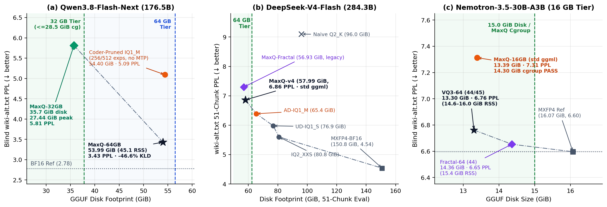

Frontier 30B–284B MoE models on 16–64 GB CPUs. Zero GPU.
Hardware-aware inference uniting 100% donor-free MaxQ compression, a zero-collision multi-ISA
ggml ABI (41..45), zero-copy 3D MoE --repack, and
RouteCrack 2.0 — an 832-byte L1-resident SIMD Micro-Arbiter for unified speculative decoding.
60-Second Verification
All RouteCrack 2.0 throughput benchmarks, 60 GiB Cgroup v2 variance runs, DeepSeek-V4 51-chunk logs, and
Nemotron KLD/WT2 evaluations are archived as raw logs in benchmarks/results/ and reproducible from pinned
SHA-256 artifacts using static Linux x86_64 binaries (GLIBC ≤ 2.30, zero external OpenMP
.so), macOS Apple Silicon Metal builds, or Windows 11 builds.
git clone https://github.com/synchopate/llama-modchip.git
cd llama-modchip
./modchip setup # Auto-detects 16/32/64 GB RAM + CPU ISA, verifies SHA-256
./modchip bench # Runs reproducible 2-stage CPU & RouteCrack 2.0 scorecardThree-Tier Aligned MaxQ Fleet (16 GB · 32 GB · 64 GB)
We ship a two-track publication model with explicit loader compatibility:
Standard ggml (≤ 42) checkpoints avoid custom tensor types
(Nemotron MaxQ-16GB runs unmodified on Ollama, LM Studio, and stock llama.cpp;
Qwen3.8 MaxQ-64GB uses standard types ≤ 42 and requires --no-repack on
unpatched upstream llama.cpp; Qwen3.8 MaxQ-32GB and DeepSeek-V4 MaxQ-v4 use zero
custom tensor types for multi-backend portability but require the llama-modchip v3.1.1+ loader for
ConeCollapse ffn_down_exps.bias).
Modchip Editions (44/45) use native FRACTAL_64 (3.75 bpw, 17.75 dB SQNR)
and LUT-VQ3-64 (3.00 bpw) AVX-512 / NEON / Metal kernels.
Host & Cgroup Note: Reference Zen 5 runs execute on a 16-core AMD Ryzen 9 9955HX container with
74.0 GiB RAM (Swap=0, 0 GPU). Tier residency is independently enforced via
Linux Cgroup v2 (MemorySwapMax=0): Qwen3.8 MaxQ-64GB verified under 60.0 GiB at
-c 32768 (5-rep N=1: 8.65 ± 0.07 t/s, 44.53 GiB VmHWM;
RouteCrack 2.0: 14.54 t/s cold rep-1 / 15.72 ± 0.89 t/s 5-rep persistent-TT
mean, 46.89 GiB ≤ 60.0 GiB VmHWM, swap.peak=0, oom_kill=0 in
qwen38_64gb_cgroup60g_v311.json), Qwen3.8 MaxQ-32GB under 28.5 GiB, and
Nemotron MaxQ-16GB under 15.0 GiB. DeepSeek-V4 MaxQ-v4 (58.7–59.1 GiB RSS) was
measured on the 74.0 GiB container and awaits a dedicated 64 GB cgroup test.
| RAM Tier | Aligned Checkpoint | Loader / Format | Disk / Peak VmHWM | Blind PPL / KLD | Verified Speed (16C Zen 5, 0 GPU) |
|---|---|---|---|---|---|
| 64 GB | Qwen3.8-Flash-Next-MaxQ-64GB 176.5B total · 5B active · blk.48 MTP |
Std ggml ≤42 v3.1.1 recommended ( -nr upstream) |
53.99 GiB 45.08 GiB VmHWM (60 GiB cgroup PASS) |
3.4325 0.4971 KLD vs BF16 |
15.34 agg / 21.38 W1 t/s RouteCrack 2.0 (8.67 N=1) |
| 64 GB | DeepSeek-V4-Flash-0731-MaxQ-v4 284.3B total · 13.2B active · 34L ConeCollapse |
Std types + v3.1.1 bias 0 custom types; v3.1.1 loader |
57.99 GiB 58.7–59.1 GiB RSS (74 GiB host) |
6.8592 0.6485 KLD (51c) |
7.79 agg / 12.31 W1 t/s RouteCrack 2.0 (6.80 N=1) |
| 32 GB | Qwen3.8-Flash-Next-MaxQ-32GB 24.98 GiB RAM + 10.73 GiB lazy NVMe PLE · 42L ConeCollapse |
Std types + v3.1.1 bias 0 custom types; v3.1.1 loader |
35.71 GiB 27.44 GiB peak (26.91–27.44 ≤28.5) |
5.8120 1.0069 KLD vs BF16 |
11.45 – 14.29 t/s Cgroup v2 28.5 GiB Swap=0 PASS |
| 16 GB | Nemotron-3.5-30B-MaxQ-16GB 30.2B total · 3B active · Mamba-2 + MoE |
Universal Std ggml Unmodified Ollama / LM Studio |
13.39 GiB 14.304 GiB (≤15.0 cgroup PASS) |
7.3129 0.1722 vs MXFP4 |
15.10 N=1 / 27.80 refactor 188.3 pp512 · 0 custom types |
| 16 GB | Nemotron-3.5-30B-Fractal-64 All 46 MoE tensors FRACTAL_64, 0 Q2_0 |
Modchip Type 44 CPU SIMD + Apple Metal |
14.36 GiB 15.4–17.3 GiB RSS |
6.6533 (WT2 7.36) 0.0688 vs MXFP4 · 0.1254 vs BF16 |
25.02 t/s Served Gate 78.6 M3 Max (PR #24) · 111.6 TR 7985WX |
| 16 GB | Nemotron-3.5-30B-VQ3-64 LUT-VQ3-64 + FRACTAL_64 CPU-Turbo |
Modchip 44/45 CPU AVX-512 VBMI / AVX2 / NEON |
13.30 GiB 14.6–16.04 GiB RSS |
6.7614 (WT2 7.44) 0.0871 vs MXFP4 · 0.1495 vs BF16 |
24.18 t/s Gate (100/100) 54.43 TR 9960X (Issue #40) |
Benchmark Attribution Notes: Nemotron's RouteCrack 2.0 head-to-head run
(28.20 agg / 42.18 W1 tok/s, benchmarks/results/nemotron_routecrack2_v31.json) was measured on
the 16.07 GiB Fractal-MXFP4 reference checkpoint, not on Fractal-64, VQ3-64, or
MaxQ-16GB. For Nemotron KLD, both protocols are reported: 0.0688 / 0.0871 are 40×512
wiki-alt.txt vs. MXFP4, while 0.1254 / 0.1495 are logged 32-probe Step-0 KLD vs.
true 58.84 GiB BF16 (matched rollout: 0.0929 / 0.0944 nats). The Qwen3.8 -46.6% KLD
comparison is against ISTA-DASLab GSQ-RCO-Coder-IQ1_M (54.40 GiB, coder-tuned with 256/512 experts pruned),
the only published third-party ≤ 55.5 GiB Qwen3.8 GGUF, evaluated on general Wikipedia text.

wiki-alt.txt evaluations across all three RAM tiers. On Qwen3.8-Flash-Next,
MaxQ-64GB cuts KLD by 46.6% vs 54.40 GiB coder-pruned IQ1_M (256/512 experts) while preserving all 512/512 experts
and the blk.48 NextN MTP head; MaxQ-32GB (27.44 GiB peak VmHWM via 42L ConeCollapse + lazy NVMe PLE) is the sole
checkpoint verified under a strict 28.5 GiB Cgroup v2 ceiling with Swap=0. On Nemotron (c), only MaxQ-16GB
(14.304 GiB VmHWM) is cgroup-verified under 15.0 GiB; VQ3-64 and Fractal-64 are <15.0 GiB on disk.

Fractal-MXFP4 reference; 5-rep Cgroup v2 CI for Qwen3.8 in
qwen38_64gb_cgroup60g_v311.json). Includes honest trade-offs: W4 free prose on non-MTP 284B DeepSeek-V4
runs -7.4% vs N=1, and aggregate RC2 vs v3.0 deltas on DeepSeek (+0.84%) and Nemotron (+3.96%) fall within single-run
variance. Greedy T=0 outputs are 100% bit-exact on structured W1+W2 across all 3 models, with batch-GEMM FP drift on
high-entropy W3/W4.
Wanted Hardware Runs
Community members have verified llama-modchip on Zen 5, Threadripper PRO 7985WX (111.62 t/s on Nemotron),
Threadripper 9960X (54.43 t/s on Nemotron VQ3-64), Apple M5 Max (27.0 t/s on historical withdrawn 284B DeepSeek-V4
Fractal; MaxQ-v4 awaits fresh M5 Max run), AWS Graviton3 (44.97 t/s on Nemotron), and Dual
Broadwell Xeon. We are actively looking for reproducible ./modchip bench scorecards on three missing
server/cloud silicon tiers:
| Target Silicon | Memory / ISA | Target Workloads | Submit |
|---|---|---|---|
| AMD EPYC 9005 Turin Wanted | 64–192C Zen 5 · AVX-512 VBMI · 12-Ch DDR5-6000 | --preset qwen38-64gb & --preset dsv4-maxq |
Submit Scorecard |
| Intel Xeon 6 Granite Rapids Wanted | 64–128C · AVX-512 / AMX · 8–12-Ch DDR5 / MRDIMM | --preset qwen38-64gb & --preset dsv4-maxq |
Submit Scorecard |
| AWS Graviton4 / AmpereOne Wanted | 16–192C ARM64 Neoverse-V2 / SVE2 · 12-Ch DDR5 | --preset nemotron-vq3 & --preset qwen38-64gb |
Submit Scorecard |
Open Research Problems (2026–2027)
- Sub-2-Bit Donor-Free Compression for 500B–1T MoE on 128 GB CPUs: Extending coupled FP64 Woodbury DualGram + PCA-Wiener subspace folding so trillion-parameter sparse checkpoints remain loop-free on multi-channel DDR5 hosts without donor transcoding.
- Hardware-Adaptive L1 Arbiters for Hybrid SSM + GQA Architectures: Online calibration of the 832-byte micro-arbiter directly against per-socket DRAM bandwidth counters and active-expert fanout.
- Zero-Copy PCIe Gen5 Demand-Paged Embeddings & Experts: Deterministic
io_uringprefetching of ultra-large per-layer embedding tables under tight 16–32 GB Cgroup v2 budgets.
Contact & Collaboration
This is an independent, non-commercial systems research effort. All runtime patches, kernels, and evaluation harnesses are published under Apache 2.0 on GitHub. For hardware benchmark collaboration, silicon testing, or technical discussion:
synchopate@gmail.com ·
github.com/synchopate ·
huggingface.co/Synchopate